Section 8.1: The Logic of Hypothesis Testing
Learning Objectives
1.Describe the logic of hypothesis testing.
2.Identify and interpret null and alternative hypotheses.
3.Identify left tail, right tail, and two tail tests.
4.Identify and interpret test statistics and P-values
5.State conclusions of hypothesis tests in context
6.Identify and describe type I and type II errors
The Logic of Hypothesis Testing
The logic of hypothesis testing is often obscured by the amount of language and symbols that are used. For that reason, we will first consider two examples where we will focus on the inference based on sample data and probability without any confusing definitions. Afterward, we will go back and provide the language and definitions that are necessary to conduct hypothesis tests throughout this chapter and chapters 10 and 11.

Figure 8.3: The logic of hypothesis testing.
Figure 8.3 shows the logic process used in hypothesis testing. The process of hypothesis testing contains three steps.
(1)A claim is made
(2)Sample data are collected to test the claim
(3)The data are analyzed to support or refute the claim.
Simply put, someone makes a claim about a population, and sample data are used to analyze whether it is reasonable or should be rejected.
Example 1: Logic of Hypothesis Testing
According to the Gallup News Organization, 5% of the U.S. population is vegetarian. A sample of 250 college students had 28 that identified themselves as vegetarian. Can we conclude that the rate of vegetarianism among college students is higher than for the rest of the population, based on this sample evidence?
Solution:In this example, we want to determine if the rate of vegetarians among college students is higher than the rate of vegetarians for the whole U.S. population. To do so, we will find the probability that a random sample of 250 Americans would have 28 or more vegetarians, assuming the rate of vegetarians is 5%.
Photo by Ralph (Ravi) Kayden (opens in a new tab) on Unsplash (opens in a new tab)
•If a sample of 250 with 28 vegetarians is unusual for the U.S. population, we will conclude that the population of college students most likely has a higher rate of vegetarianism.
•If the sample data are not unusual for the population, we will conclude that there is probably no real difference between college students and the rest of the U.S. population.
We have two methods available to calculate the probability. One method is to assume that X = the number of vegetarians in a sample of n = 250 individuals is binomial. We leave it to the reader to check that the assumptions for a binomial experiment are met. We will use this method in example 1. The other method is to approximate the probability using the distribution of sample proportions (section 7.4), which we will show in example 3.
After verifying that “X = the number of vegetarians in a sample of 250 randomly selected Americans” is a binomial experiment, we use the Binomial Calculator in STATBELT Utility- the Statistical Basics Exploratory Learning Tool (opens in a new tab) (Calculators → Binomial Calculator) with n = 250 and p = 0.05 to investigate the likelihood of our sample occurring. We find the probability that at least 28 of 250 Americans are vegetarians, assuming that the population proportion is really 5%. This is a conditional probability, first studied in section 5.3. It would be written symbolically as . Recall that the vertical line is read as “given the second condition” or “assuming the second condition is true.” Note that our assumption that p = 0.05 is what makes it possible to calculate the probability using the Binomial Calculator.
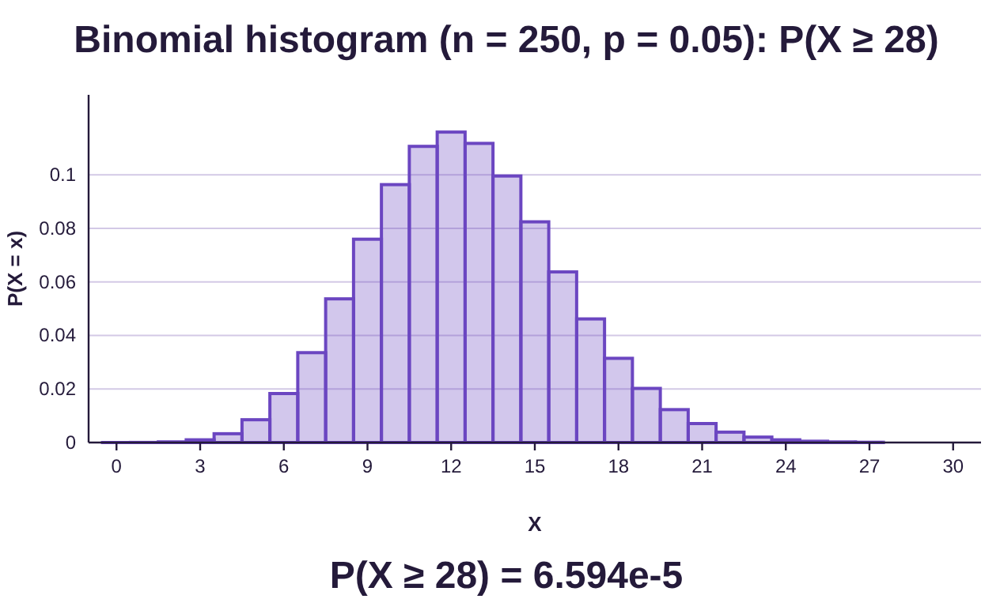
From the calculator, we get . So, fewer than seven out of 100,000 samples of 250 people would result in 28 or more vegetarians. That is a very rare sample! As a result, we have two choices for our conclusion. Either
1)The rate of vegetarians is the same for college students and we obtained an exceedingly rare sample (less than 7 in 100,000 chances of that), or
2)The rate of vegetarians among college students is higher than for the rest of the U.S. population, as reflected in the sample data.
Because the chance that this sample randomly occurs is so small, we conclude that the rate of vegetarians among college students is probably higher than the rate for the rest of the population.
Example 2: Logic of Hypothesis Testing
The mean length of prison sentences for males convicted in federal courts between 2006 and 2008 was 49.9 months with standard deviation 69.99 months. If a sample of 161 Black males had a mean sentence of 64.9 months, can we conclude that Black males received longer sentences than average? Source: Starr, Sonja B. "Racial Disparity in Federal Criminal Sentences." M. M. Rehavi, co-author. J. Pol. Econ. 122, no. 6 (2014): 1320-54*
Solution:First of all, we are given a population with a mean months and standard deviation
months. We don’t know about the shape of the population of prison sentences, but it is likely skewed to the right due to some prisoners having exceptionally long sentences.
Our task is to find the probability that a sample of n = 161 convicted males would have a sample mean sentence length of at least 64.9 months, assuming the Black population has the same mean and standard deviation as the population of all convicted males. Remember, if the sample is very rare, there is evidence that Black males received longer sentences than average.
So, we are looking for a conditional probability once again. This time, it is written as
. This is a central limit theorem problem from section 7.3.
Questions about sample means, or group averages:
Given samples of size n and parent distribution with mean and StDev
•Variable-
•Mean-
•StDev-
•Normal if either
•x is normal, or
•
The parent distribution for “X = prison sentence length” has mean months and standard deviation months, but we don’t know about the specific shape of the distribution.
The distribution of sample means, , of samples of size n = 161 has the same mean, The standard deviation is
We don’t know the shape of the parent distribution, but since , we know that has a normal distribution. We can now completely describe the distribution for :
• has mean
• has standard deviation
• is normally distributed
Now, use the Normal Calculator in STATBELT with the mean and standard deviation above to get
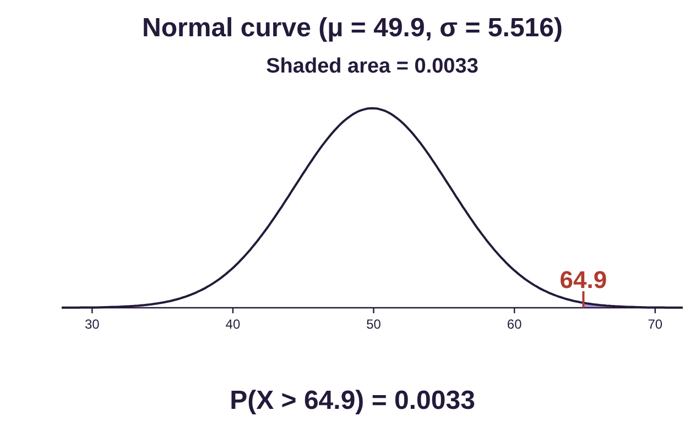
Photo by Karsten Winegeart (opens in a new tab) on Unsplash (opens in a new tab)
So, there is about a 0.33% chance that this sample would occur randomly, assuming Black males are assigned prison sentences of the same length as the rest of the population. That leaves us with 2 options. Either
1)Black males are assigned prison sentences that are really the same as the rest of the population and we obtained a very rare sample (about one-third of one percent chance), or
2)The mean prison sentence for black males is longer than it is for the rest of the population.
Because the sample is not consistent with the claim that Black males are sentenced the same as the rest of the population, we reject the idea that the prison sentence lengths are the same for Black males. This evidence supports the claim that Black males are sentenced to longer terms in prison.
(*For full transparency, I should note that this sample of 161 was fictional. The actual sample had 16,143 black males with the same sample mean of 64.9 months, which was 27 standard deviations above the mean prison sentence for all convicted males! That made the probability so much lower that STATBELT reports it as 1.434e-163, which means 162 zeros after the decimal point before the first nonzero digit. For illustrative purposes, I reduced the sample size so you could see a probability! But it does mean that the evidence that Black males receive longer sentences is very strong. If this topic interests you, you can check out the website for the Sentencing Project (opens in a new tab) at www.sentencingproject.org (opens in a new tab) )
Components of Hypothesis Testing
Now it is time to take the idea of using sample data and probability to evaluate claims and add some terminology. In each of the first two examples, we started with an assumption, then found a conditional probability. The assumption that we begin with is called the “null hypothesis.” The competing claim that the null hypothesis is not true is called the “Alternative hypothesis.”
Definition 1
The Null Hypothesis is the statement that is assumed true unless sample evidence indicates it is likely not true. The null hypothesis always has the form “parameter = value.” It is a statement of no change, or status quo. The symbol for the null hypothesis is .
The Alternative Hypothesis is the statement that competes with the null hypothesis. If the null hypothesis appears untrue, then there is evidence to support the alternative hypothesis. The notation for the alternative hypothesis is (some books and software use ).
Assume a hypothesis test for a mean is conducted. Then the three types of tests are:
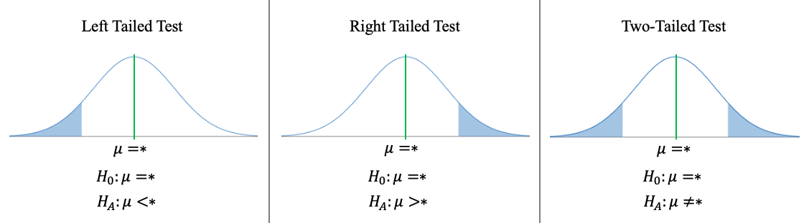
Left Tailed Test- The alternative hypothesis is that the parameter is less than an assumed value.
Right Tailed Test- The alternative hypothesis is that the parameter is greater than an assumed value.
Two-Tailed Test- The alternative hypothesis is that the parameter is either less than or greater than an assumed value. In other words, it is not equal to the assumed value.

Important Point!
The conclusion of a hypothesis test is always to either reject the null hypothesis , or fail to reject . We never prove the null hypothesis is true. We either reject it, or we passively allow it to stand.
Example 3: The Terminology of Hypothesis Testing
Let’s redo example 1 using the new terminology. According to the Gallup News Organization, 5% of the U.S. population is vegetarian. A sample of 250 college students had 28 that identified themselves as vegetarian. Can we conclude that the rate of vegetarianism among college students is higher than for the rest of the population, based on this sample evidence?
a)Identify the null hypothesis .
b)Identify the alternative hypothesis .
c)identify the test as left tailed, right tailed, or two-tailed.
d)Assuming is true, describe the sampling distribution.
e)Use probability to reject or fail to reject the null hypothesis.
Solution:a)The null hypothesis is what we assume to be true. In this problem, we are given a claim about a proportion, so we will use the parameter p. In example 1, we were told that the proportion of the U.S. population that is vegetarian is 5%. So, we assumed that the proportion of college students who were vegetarian was also 5%, assuming there is no difference. Remember that the null hypothesis always assumes no difference, or no change! Symbolically, the null hypothesis is:
Photo by Adam Bartoszewicz (opens in a new tab) on Unsplash (opens in a new tab)
b)The alternative hypothesis is given in the last sentence. It asks if we have the evidence to conclude that the proportion of vegetarians among college students is higher than the rest of the population. In symbols, that means
c)This is a right tailed test because the inequality in the alternative hypothesis is “>”. If the sample proportion is high enough, the area in the right tail of the distribution will be very small, and we will reject the null hypothesis.
d)Because the test is about a proportion, we will use the distribution of sample proportions. This is the method we will use in section 8.2. You will see that the probability that we compute will be slightly different than what we found in example 1.
The distribution of sample proportions has n = 250 and p = 0.05, which is 5% written in decimal form. The variable is , which is the proportion of samples that are vegetarian.
Questions about sample proportions: Given binomial X with n and p
•Variable-
•Mean-
•StDev-
•Normal if
•The mean is .
•The standard deviation is calculated as follows:
•To determine the shape, we check if .
Since , the distribution of sampling proportions will have an approximately normal distribution.
So, the distribution of sample proportions is described as follows:
• has mean
• has standard deviation
• is normally distributed
e)In this example, . So, we want to find the probability that a sample of 250 would have 11.2% or more vegetarians, assuming . This is written symbolically as
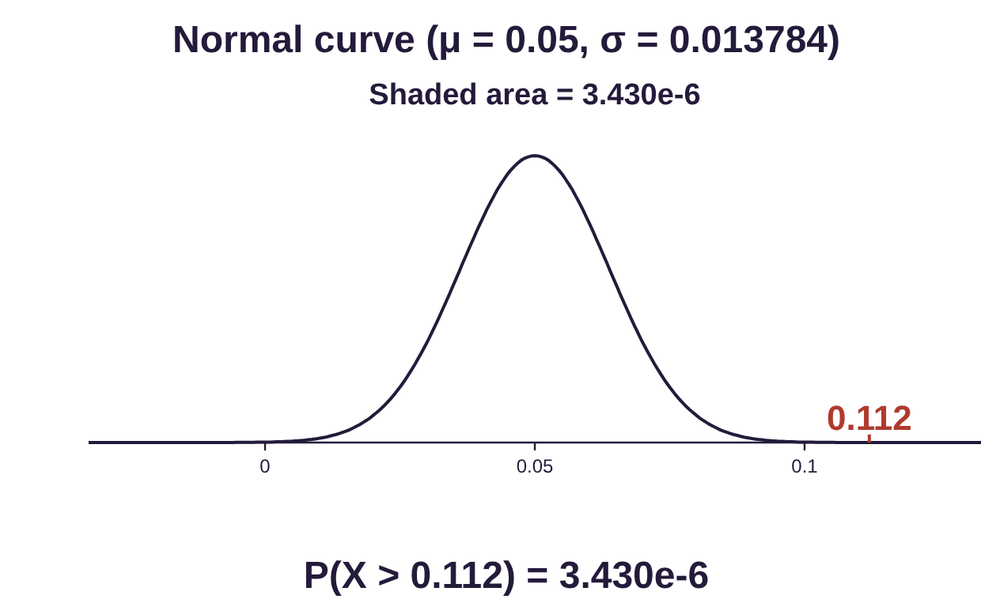
Because the probability of obtaining this sample (or one that is more extreme) is very low, we reject the null hypothesis that the proportion of vegetarians is equal to 5%. Sample evidence suggests that the proportion of college students who are vegetarian is higher than the rest of the U.S. population.
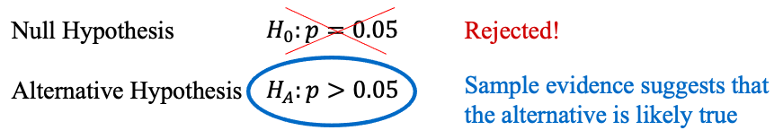
Example 4: The Terminology of Hypothesis Testing
Let’s redo example 2 using the new terminology. The mean length of prison sentences for males convicted in federal courts between 2006 and 2008 was 49.9 months with standard deviation 69.99 months. If a sample of 161 Black males had a mean sentence of 64.9 months, can we conclude that Black males received longer sentences than average?
a)Identify the null hypothesis .
b)Identify the alternative hypothesis .
c)identify the test as left tailed, right tailed, or two-tailed.
d)Assuming is true, describe the sampling distribution.
e)Use probability to reject or fail to reject the null hypothesis.
Solution:a)The null hypothesis is what we assume to be true. In this problem, we are given a claim about the mean prison sentence, so we will use the parameter In example 2, we assumed that the mean prison sentence for Black males was the same as the mean prison sentence for all males convicted in federal courts. Symbolically, that is
b)The alternative hypothesis is given in the last sentence. It asks if we have the evidence to conclude that prison sentences for Black males are longer than the average. In symbols, that means
c)This is a right tailed test because the inequality in the alternative hypothesis is “>”. If the sample mean is far enough above the assumed population mean, the probability that it is that value or higher will be the area in the right tail of the distribution. If the area of that right tail is small enough, we will reject the null hypothesis.
d)Because the test is about a mean, we will use the distribution of sample means from section 7.3. In this case, we have a sample of n = 161 Black males with mean prison sentence is and standard deviation is . As we computed in example 2:
• has mean
• has standard deviation
• is normally distributed since .
e)This part is the same as in example 2.
Use the Normal Calculator in STATBELT with the mean and standard deviation above to get .
Since the sample data are not consistent with the claim that the mean prison sentence is the same for Black males, we reject the null hypothesis. Evidence indicates that the alternative hypothesis is true.
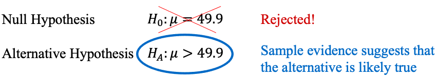
In context, sample evidence supports the claim that the mean prison sentence for Black males is longer than the mean prison sentence for all males convicted in federal courts.
Definition 2
The Test Statistic is a random variable that is calculated from sample data and the parameters assumed in the null hypothesis. (For example, a Z-score is test statistic using the sample mean , sample standard deviation s, and assumed population mean )
The P-Value is the probability that a sample statistic will be at least as extreme as the observed test statistic from the collected data, assuming the null hypothesis is true. The P-Value is always the area of a tail or tails (a tail probability).
The significance level of a hypothesis test is used to determine how rare or unusual we want the sample data to be to reject the null hypothesis. We use to represent significance, which is 5% = 0.05 by default when using technology. If the P-Value is less than the significance level , we reject the null hypothesis.
For a left tailed test, the P-Value is the probability that the variable is less than the test statistic.
For a right tailed test, the P-Value is the probability that the variable is greater than the test statistic.
For a two-tailed test, the P-Value is the probability that the variable is farther from the mean than the test statistic, making it the area of both the left and right tails. When the variable is symmetric, the two tails have the same area, so the P-Value is twice the area of one of the tails. See figure 8.4.
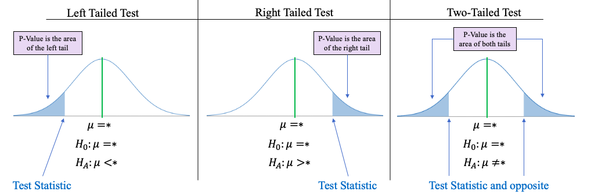
Figure 8.4: The P-Value for each of the three test types.
Example 5: The Mechanics of Hypothesis Testing
Assume that a hypothesis test is conducted with significance level 0.05 and
Null Hypothesis
Alternative Hypothesis
a)Identify the test as left tailed, right tailed, or two-tailed.
b)If the test statistic is Z = -1.74, find the P-Value. (Here Z is the standard normal variable- we will see how this is calculated for a proportion hypothesis test in section 8.2).
c)Do you reject or fail to reject the null hypothesis?
Solution:a)The null hypothesis claims that a population proportion is equal to 72%. Since the alternative hypothesis is , or that the proportion is less than 72%, this is a left tailed test.
b)The test statistic is a standard normal variable Z with mean 0 and standard deviation 1 (see section 7.2). Since this is a left tailed test with test statistic Z = -1.74, the P-Value is
P-Value = , the area of the left tail.
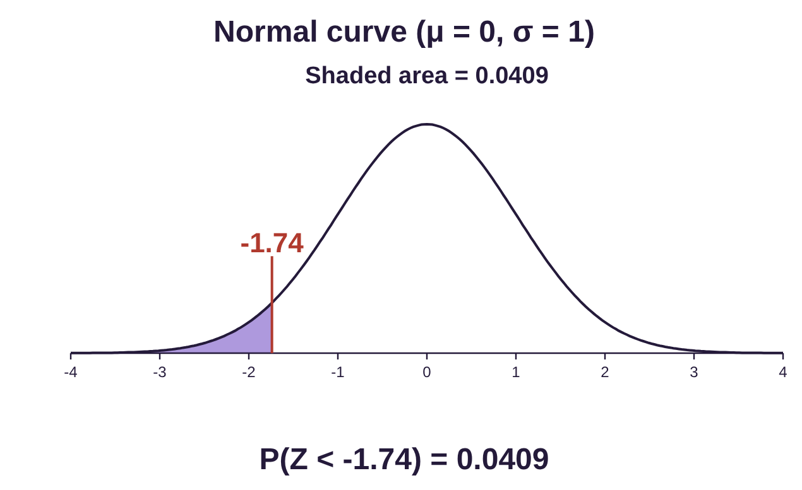
c)For this example, , so we are conducting the test at the 5% level of significance. Mechanically, the P-Value = 0.0409 is less than , so we reject the null hypothesis. Evidence supports the alternative claim that the proportion is less than 0.72.
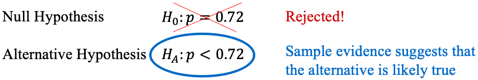
Logically, this means that samples this extreme would occur randomly only about 4% of the time if the true population proportion is really 72%. Since 4% is less than 5%, this sample is an unusual occurrence if the proportion is really 72%. So, we reject the claim that the proportion is really 72% and support the claim that the proportion is lower.
Example 6: The Mechanics of Hypothesis Testing
Assume that a hypothesis test is conducted with significance level 0.01 and
a)Identify the test as left tailed, right tailed, or two-tailed.
b)If the test statistic is z = 1.31 for a standard normal variable, find the P-Value.
c)Do you reject or fail to reject the null hypothesis?
Solution:a)The null hypothesis claims that the population proportion is 9% = 0.09. The alternative hypothesis is that the population proportion is greater than 0.09, , so this is a right tailed test.
b)The test statistic is a standard normal variable Z with mean 0 and standard deviation 1. Since this is a right tailed test with test statistic Z = 1.31, the P-Value is P-Value = .
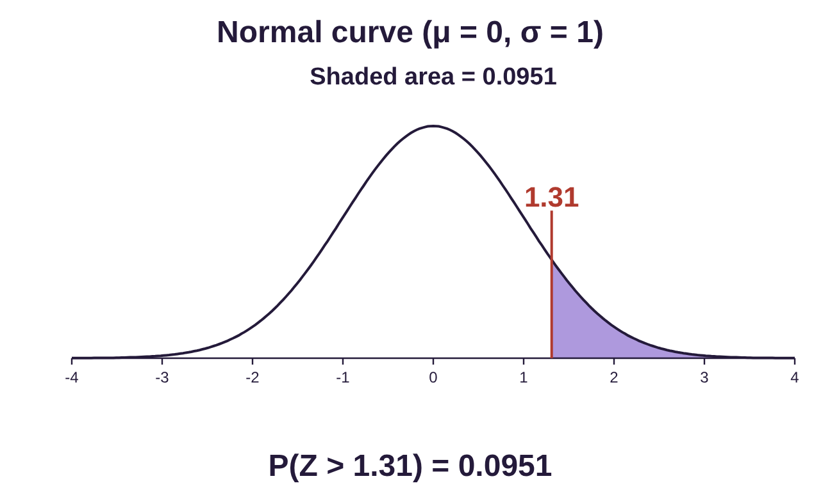
c)Here, so we say we are testing this claim at the 1% significance level. The P-Value = 0.0951 is not less than , so we fail to reject the null hypothesis. This case is inconclusive. The proportion may be 9%, or it may be greater.
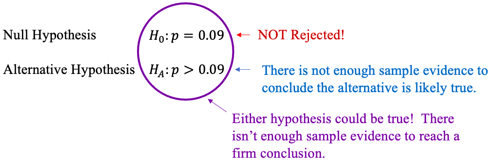
 Tip!
Tip!The null and alternative hypotheses are in competition. If you reject the null hypothesis, the statistics are telling you that the alternative hypothesis is likely true. In that situation, there is sufficient statistical evidence to support the alternative claim.
But, if you don’t reject the null hypothesis, then either hypothesis could be correct. There is insufficient evidence to reach a firm conclusion. It is the equivalent of saying you don’t know which hypothesis is correct. The null hypothesis could be correct. Or maybe the alternative. You just can’t say for sure.
You can practice interpreting conclusions of hypothesis tests by playing the “To Reject or Not Reject” – The Hypothesis Test Conclusion Game!
GamePlay “To Reject or Not Reject” – The Hypothesis Test Conclusion Game
We can now look at the process of hypothesis testing. Figure 8.5 is a flowchart that applies to any test. As we proceed through the chapter, we will add details to the flowchart for the types of tests that we conduct. Any hypothesis test will follow the same six-step process!
Figure 8.5: The Process of hypothesis testing.
Example 7: The Process of Hypothesis Testing
In an April 2021 study, the Pew Research Center found that 60% of Americans believe that marijuana should be legal for medical and recreational use. A student researcher in 2022 believes the percent is higher and collects sample data. Her sample data follows a standard normal distribution and has a test statistic z = 1.19. Test the claim at a 5% significance level by working through the process of hypothesis testing shown in figure 8.5. Namely,
Step 1: Identify the hypotheses.
Step 2: Identify the significance level.
Step 3: Verify that the assumptions to conduct the test are met.
Step 4: Identify the sampling distribution and compute the test statistic.
Step 5: Find the P-Value.
Step 6: Do you reject or fail to reject the null hypothesis?
Solution:This problem asks us to conduct a hypothesis test, so we follow the six-step process.
Step 1:There are two claims made in the example. One claim made by Pew Research Center is that the population proportion of Americans who believe that marijuana should be legal is equal to 60%. Because this claim is “=”, it is the null hypothesis. Using 60% = 0.6, we have
The alternative hypothesis is what the student researcher is attempting to show, namely that the proportion is higher than 60%. So, the alternative hypothesis is
The alternative hypothesis determines which type of test it is. In this case, the alternative hypothesis is that the population proportion is greater than 60%, , so this is a right tailed test.
Step 2:The problem asks us to test the claim using significance level .
Step 3:The problem states that the sample data follow a normal distribution. We will expand on the conditions that need to be met in sections 8.2 and 8.3.
Step 4:The test statistic variable is a standard normal variable z with mean 0 and standard deviation 1. The test statistic was given as z = 1.19. This step has been completed for you. We will spend more time on this and the following step in sections 8.2 and 8.3.
Step 5:This is a right tailed test using the standard normal variable z with test statistic z = 1.19. So, the P-Value is .
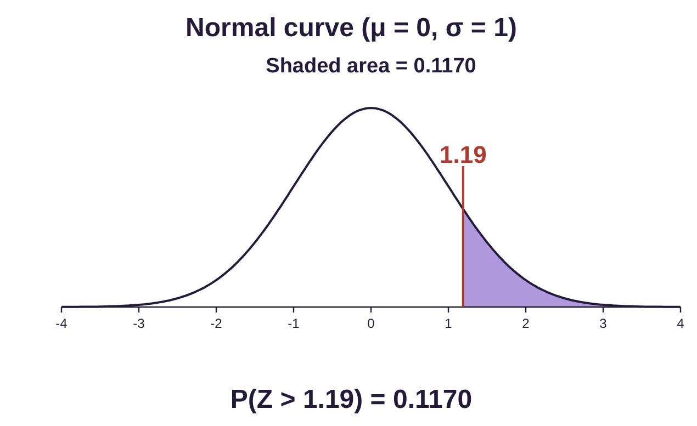
Step 6:Since the P-Value is , which is NOT less than the significance level , we fail to reject the null hypothesis. In context, this means that there is not enough sample evidence to conclude that the population proportion of Americans who believe marijuana should be legal is higher than 60%.
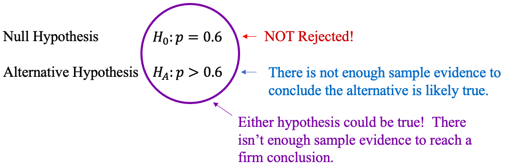

Important Point!
Remember, the P-value is just the probability of getting the sample we have if the null hypothesis is true. So, if the P-value is small, the sample is rare, and we reject the null hypothesis. If the P-value is not small, the sample data is not very different from what we assumed in the null hypothesis, so we don’t reject it.
Practice making decisions with P-values by playing The P-Value Decision Game!
GamePlay The P-Value Decision Game
Types of Errors in Hypothesis Testing
It may seem counterintuitive, but there are two ways that you can make a mistake in hypothesis testing. These mistakes are called Type I and Type II errors.
Definition 3
A Type I error is the error that is made by rejecting the null hypothesis when it is TRUE.
A Type II error is the error that is made by failing to reject the null hypothesis when it is FALSE. See Table 1.
The probability of a Type I error is the significance level, .
This is the probability that the null hypothesis is true, and we obtained a very rare sample through random chance.
The probability that a Type II error is made is called beta.
The value of depends on the value assumed true in the null hypothesis as well as the actual value of the parameter. As a result, it is much more complicated to calculate, and we will not do so in this book.
Table 1: Type I and Type II Errors | ||
|---|---|---|
Conclusion | Null Hypothesis Is False | Null Hypothesis is True |
Reject the Null Hypothesis |
No Error! The Null Hypothesis is false, and it was rejected. | Whoops! The Null Hypothesis was true, but the sample was rare, so we mistakenly rejected it! Type I error! |
Fail to Reject the Null Hypothesis | Whoops! The Null Hypothesis was false, but we didn't reject it! Type II error! |
No Error! The null hypothesis is true, and we didn't reject it!
|
It might help to think of the U.S. court system. In the courts, a person is assumed innocent until proven guilty beyond a reasonable doubt. The null hypothesis is that a suspect is innocent. The alternative hypothesis is that the suspect is guilty. “Reasonable doubt” is analogous to the level of significance we use in hypothesis tests. If there is a very small probability that the evidence would occur assuming the suspect is innocent, then we reject the suspect’s innocence. (This is an example of subjective probability that we introduced in chapter 5, along with theoretical and empirical.)
The hypothesis test in a court case would be set up like this:
The individual is innocent
The individual is guilty
If the evidence is compelling, we reject “ The individual is innocent,” and instead assume that the alternative is true. The suspect is guilty!
If the evidence is not compelling, we fail to reject The individual is innocent. The court terms this finding “not guilty.” It does not necessarily mean that the suspect is innocent. It means there was not enough evidence to find the person guilty. When we fail to reject a null hypothesis, we have two hypotheses that might be true. We simply don’t have enough evidence to reject the null hypothesis.
So, there are two types of errors that the court can make.
Type I: The court can find an innocent person guilty. In this situation the court rejects the null hypothesis, that the person was innocent, and instead finds them guilty. In this case, the mistake results in an innocent person paying fines, going to jail, or both.
Type II: The court can find a guilty person “not guilty.” Here, the null hypothesis that the individual is innocent is false, but they did not reject it to find them guilty. This mistake results in a guilty person not paying for their crimes financially, through probation, or jail.
As you can see, the two types of errors are very different.
Photo by Oscar Ivan Esquivel Arteaga (opens in a new tab) on Unsplash (opens in a new tab)
Example 8: Type I or Type II Error?
In example 1 and example 3, we used a hypothesis test to show that the rate of vegetarians among college students was higher than the rate of vegetarians among the whole U.S. population. We used a sample of 250 college students, which had 28 that identified themselves vegetarian. The test was set up as follows:
Null Hypothesis-
Alternative Hypothesis-
The conclusion of the test was to reject the null hypothesis with a P-Value . What is the possible error that this conclusion makes?
Solution:Because the probability of obtaining this sample or one that is more extreme was very low, we rejected the null hypothesis that the proportion of vegetarians among college students is equal to 5%. Sample evidence suggests that the proportion of college students who are vegetarian is higher than the rest of the U.S. population.
What is the potential error we could be making? It is a Type I error to reject a null hypothesis that is true. In this case, it is possible that we had a very rare sample that led us to reject the null hypothesis, even though it was true. In context, it is possible that the rate of vegetarians among college students is 5%, the same as the rest of the U.S. population, but we mistakenly rejected it. However, the probability of making a Type I error is , so it is far more likely that we are not making a Type I error.
Example 9: Type I or Type II Error?
In example 7, we used a hypothesis test to examine whether the proportion of Americans that believe that marijuana should be legal for medical and recreational use was higher than 60%. The hypothesis test was set up as follows:
Null Hypothesis-
Alternative Hypothesis-
The conclusion of the test was to fail to reject the null hypothesis with a P-Value . What is the possible error that this conclusion makes?
Solution:Because the probability of obtaining this result was not lower than the significance level, we did not reject the null hypothesis. That means that we did not have conclusive evidence that the proportion of Americans who believe marijuana should be legal for medical and recreational use was higher than 60%.
What is the potential error we could be making with this conclusion? It is possible that the null hypothesis (that the population proportion is equal to 60%) is wrong, but we did not reject it. Perhaps the proportion is greater than 60%, but we failed to find the evidence to reach that conclusion. That is a Type II error, failure to reject a false null hypothesis. However, it is not as easy to estimate the probability that a Type II error has been made (we won’t cover that in this book).
When you fail to reject the null hypothesis, it is ether because
1. The null hypothesis is true, and collecting more data will not seriously contradict it, or
2. The null hypothesis is false (a Type II error is made), and you need more data to have conclusive evidence of this fact.
This section contains the outline of hypothesis testing. The language can certainly be confusing, and you are not alone if you find it complicated. The next two sections will detail how the process works for hypotheses about population proportions for qualitative variables (section 8.2) and hypotheses about population means of quantitative variables (section 8.3). Section 8.4 will summarize and differentiate between the tests. For the remainder of the chapter, we will be following the steps shown in the flowchart shown in figure 8.5 reproduced below. Hopefully, it will help to make the process clearer.
Figure 8.5: The process of hypothesis testing.